1. Part 1.1: Gradient Magnitude Image
By convolving the image with D_x and D_y, then summing the vector values of both results, we obtain the gradient magnitude image. A threshold value of 0.2 was selected, assigning 1 to values greater than 0.2, and 0 to others, resulting in a binarized edge image. The result is shown below:
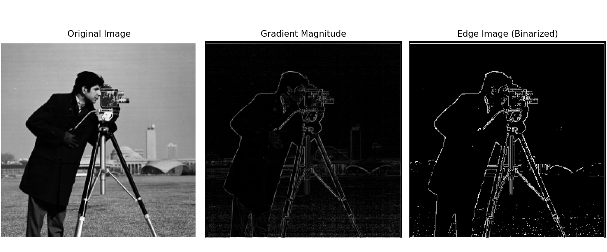
2. Part 1.2: Gaussian Blur and Edge Detection
In this part, the image is first Gaussian blurred, with a kernel size of 5 and a sigma value of 1, resulting in a slight blur. Then, the blurred image is used for the edge detection operation in part 1.1, yielding an edge image. It can be seen that the blurred image reflects the edges of the original image more clearly, with fewer noise points and wider, more defined edges. This improvement is likely because the points that were previously misidentified as edges have been smoothed out by the Gaussian kernel, effectively removing the noise. The result is shown below:
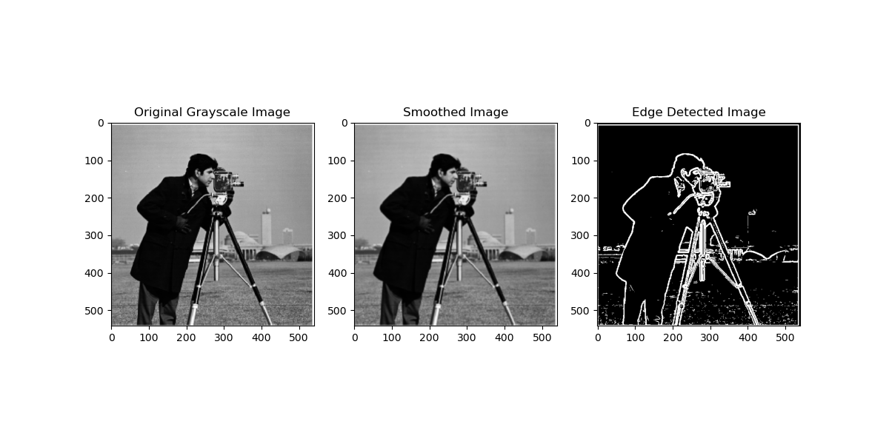
Alternatively, a Gaussian kernel is first blurred and convolved with the image, yielding the same result, shown below:
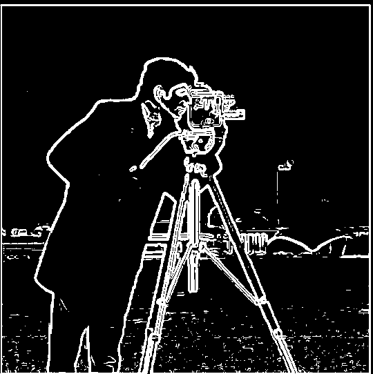
3. Part 2.1: Image Sharpening
The image is sharpened by extracting its high-frequency information and adding it back with a sharpening factor. The result is shown below:
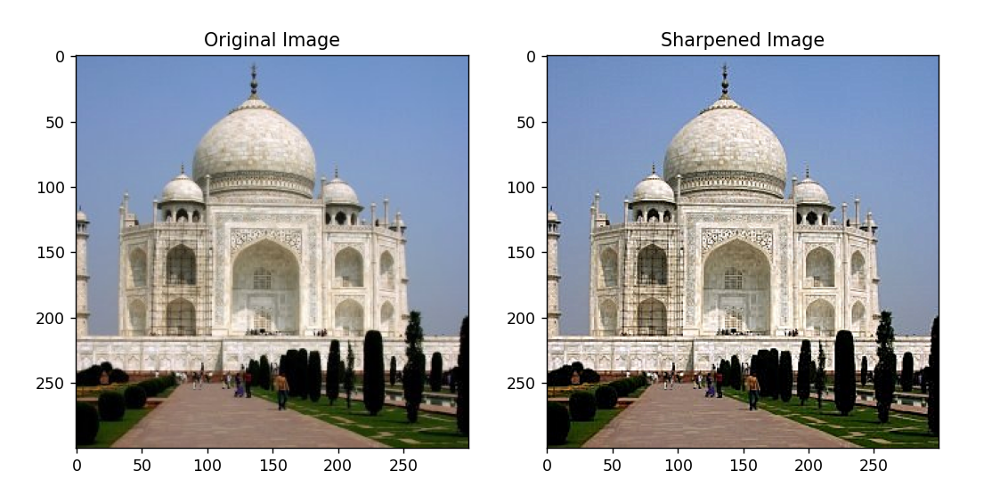
After sharpening, the image is blurred and then sharpened again. The result is shown below:
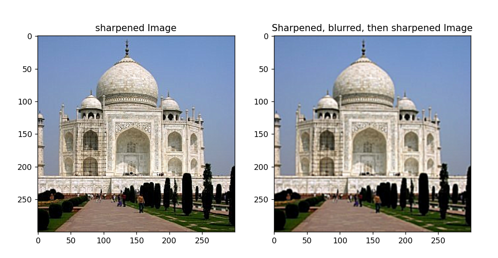
After sharpening, the image is blurred and then sharpened again. The sharpening factor is higher than before, but the result is not ideal. The image edges remain fairly clear, but many details are still blurry. This is because the second sharpening was performed after blurring, which removed much of the high-frequency content. While the sharpening process attempts to restore edges and details, the blurring step significantly reduced the image's high-frequency details, making the sharpening less effective than initially. The result is shown below:
Other sharpened images are shown below:
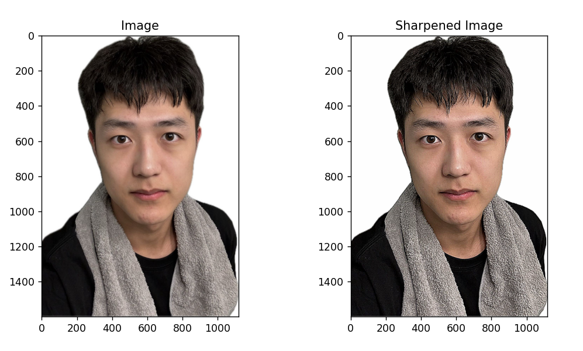
4. Part 2.2: Image Hybriding
The high-frequency and low-frequency information of two images are hybrided together. The result is shown below:
Two more successful examples: the fusion of a car and a leopard, and the fusion of Taylor and Ed:
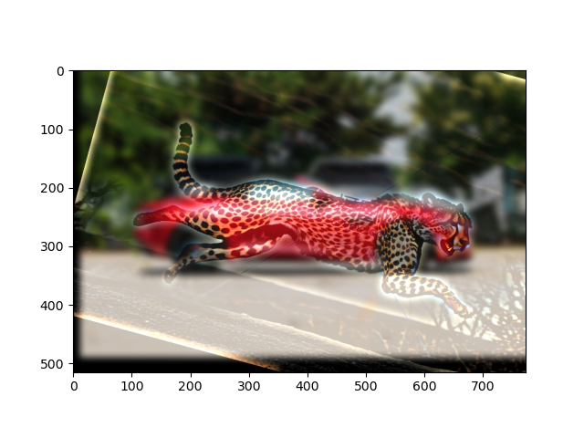
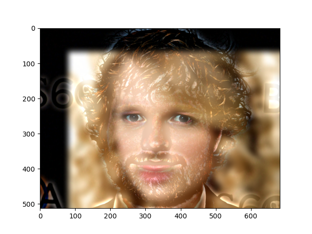
The Fourier spectrum for the images is shown below:
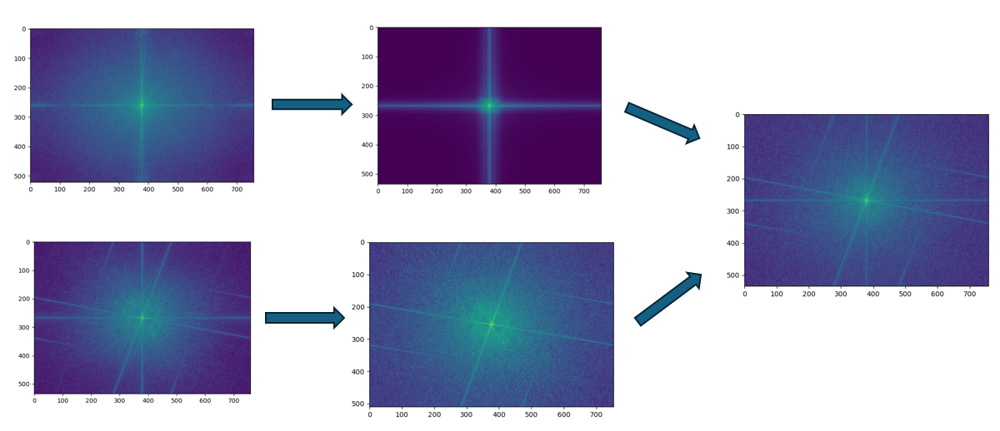
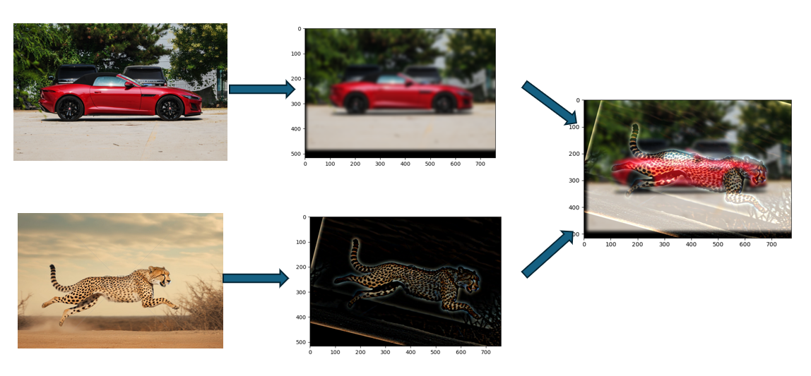
5. Part 2.3: Gaussian and Laplacian Pyramid
By continuously blurring the image, a Gaussian pyramid is constructed, and by subtracting adjacent layers, a Laplacian pyramid is obtained. The result is shown below:
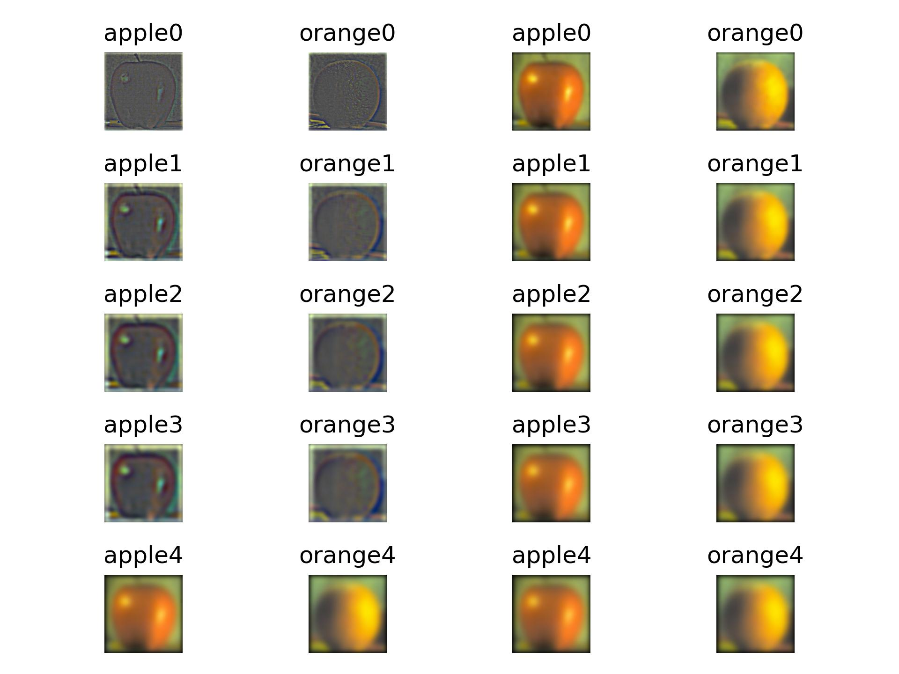
6. Part 2.4: Multiresolution Blending
Using the Laplacian pyramid, the images are blended layer by layer. The result is shown below:
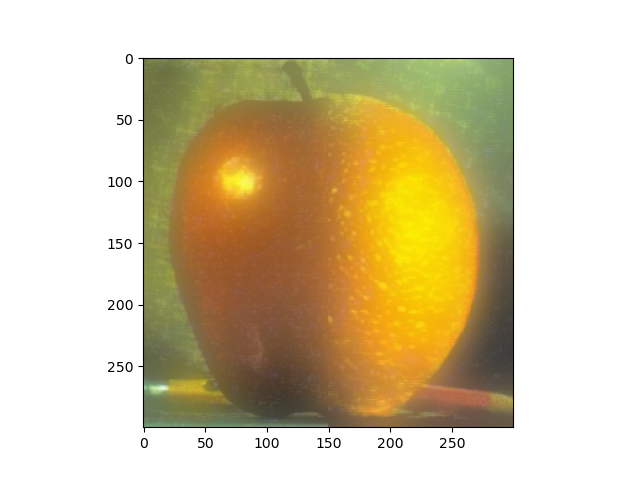
Using the same mask, the blending of two faces can be achieved. The result is shown below:
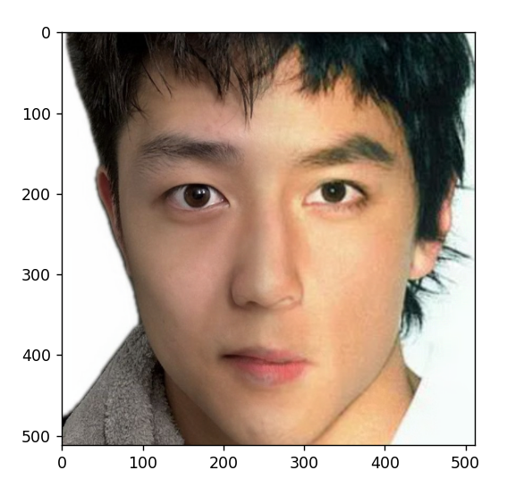
Here is an example using a different mask shape (elliptical), with the result shown below:
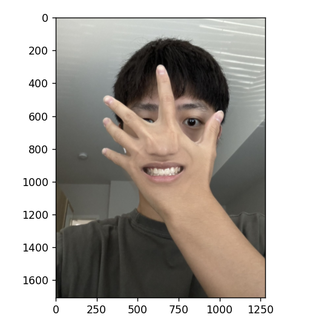